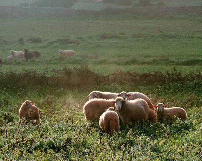

Agricultura - Ganadería. El paisaje modelado… y apetecible
 La imagen más indeleble del paisaje rural de Menorca para el recién llegado es de la infinita retícula de “pared seca”, con sus barreras de acebuche, una forma austera e ingeniosa de aprovechar un recurso abundante (la piedra) y de conciliar el manejo de las sementeras con el pastoreo del ganado.
La imagen más indeleble del paisaje rural de Menorca para el recién llegado es de la infinita retícula de “pared seca”, con sus barreras de acebuche, una forma austera e ingeniosa de aprovechar un recurso abundante (la piedra) y de conciliar el manejo de las sementeras con el pastoreo del ganado.
Desde la prehistoria, la agricultura menorquina se especializó en la faceta ganadera; los antiguos navegantes griegos del Mediterráneo la denominaron Meloussa (tierra de ganado). Tanto en la Edad Media como durante el dominio británico de la isla del siglo XVIII el predominio fue de la ganadería ovina, con una lana muy apreciada en los mercados europeos.
 En el siglo XX se llegó a la práctica hegemonía del ganado vacuno, que se prolonga hasta nuestros días. Como producto estrella se mantiene el queso artesano elaborado sin molde, por una técnica sencilla pero efectiva, exprimiendo la cuajada dentro del “fogasser”, una tela manejada con destreza por el payés o payesa, que da lugar a las piezas de forma característica: cuadrangular y de ángulos redondeados. Materia prima, asimismo, de la manufactura de “quesitos” fundidos.
En el siglo XX se llegó a la práctica hegemonía del ganado vacuno, que se prolonga hasta nuestros días. Como producto estrella se mantiene el queso artesano elaborado sin molde, por una técnica sencilla pero efectiva, exprimiendo la cuajada dentro del “fogasser”, una tela manejada con destreza por el payés o payesa, que da lugar a las piezas de forma característica: cuadrangular y de ángulos redondeados. Materia prima, asimismo, de la manufactura de “quesitos” fundidos.
La producción de queso continúa siendo clave actualmente, además de la cárnica, sea de ternera, cordero o cerdo, esta última siguiendo, en gran parte, la elaboración tradicional de los productos típicos de las matanzas, en forma de embutidos tales como sobrasada, “camot/cuixot” o “botifarró”.
La climatología menorquina, marcada por la íntima cercanía marítima y la influencia del viento de tramontana, concede un sabor peculiar a la cosecha de esta tierra que, unida a pescados y mariscos de sus aguas cristalinas, constituyen la base de una gastronomía particularmente exquisita.
 Existe amplia coincidencia en apreciar que el esfuerzo secular de los hombres y mujeres del campo menorquín, como modeladores del paisaje humanizado, y excepcionalmente preservado en el ámbito del Mediterráneo occidental, constituye la base de la declaración por la UNESCO, en el año 1993, del conjunto de Menorca como Reserva de la Biosfera.
La agricultura actual mira hacia el futuro. Están resurgiendo producciones recuperadas del olvido, como el vino, el aceite o la miel, y otras de más novedosas. Todo ello enmarcado en una paulatina implantación de la agricultura ecológica. Queda pendiente por mejorar su comercialización y extender las denominaciones de origen que permitan valorarlos en su justa medida.
Existe amplia coincidencia en apreciar que el esfuerzo secular de los hombres y mujeres del campo menorquín, como modeladores del paisaje humanizado, y excepcionalmente preservado en el ámbito del Mediterráneo occidental, constituye la base de la declaración por la UNESCO, en el año 1993, del conjunto de Menorca como Reserva de la Biosfera.
La agricultura actual mira hacia el futuro. Están resurgiendo producciones recuperadas del olvido, como el vino, el aceite o la miel, y otras de más novedosas. Todo ello enmarcado en una paulatina implantación de la agricultura ecológica. Queda pendiente por mejorar su comercialización y extender las denominaciones de origen que permitan valorarlos en su justa medida.